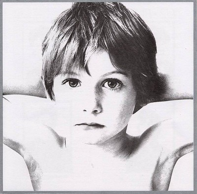
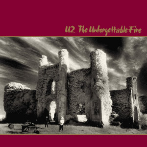
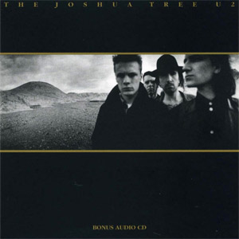
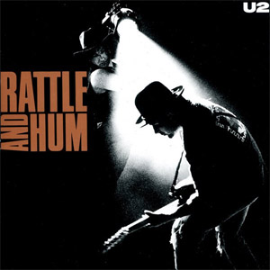
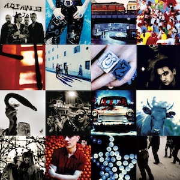

Discografía Explora los álbumes icónicos de U2  Boy Deluxe Edition Año: 1980 0 War Año: 1983 0  The Unforgettable fire Año: 1984 0  The Joshua Tree Año: 1987 0  Rattle & Hum Año: 1988 0  Acthung Baby Año: 1991 0 Zooropa Año: 1993 0 All That You Can't Leave Behind Año: 2000 0